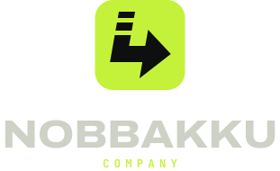
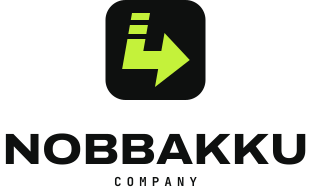
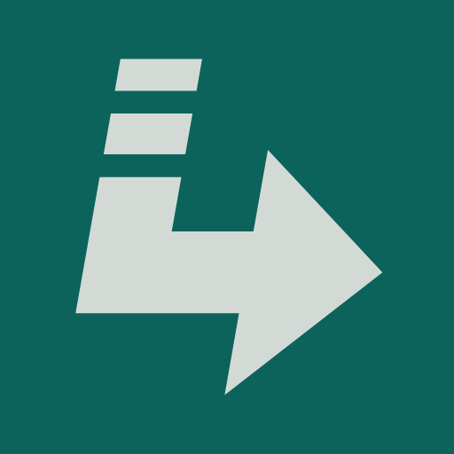

BRAND GUIDE v1.1
노빠꾸컴퍼니
브랜드 가이드
개발에 실패는 없다. 데이터 인프라부터 AI 솔루션까지 만드는 회사가 말하고, 보이고, 일하는 방식을 정리했습니다.
v0.1에서 그대로 가져온 것: 슬로건, 브랜드 키워드, 톤앤매너, 10° 기울기, "화살표는 뒤로 돌리지 않는다"
01 · KEYWORDS
브랜드 키워드
돌아가지 않고 앞으로 간다.
빠르게 결정하고 바로 실행한다.
막히면 뚫고, 될 때까지 고친다.
진지하게 일하고, 시원하게 말한다.
02 · TONE & MANNER
짧고 단호하게. 무례하지 않게.
- 짧고 단호하게. 한 문장에 메시지 하나. "~할 수도 있습니다" 금지.
- 형용사보다 동사와 숫자. "최고의 품질" 대신 "될 때까지 고칩니다", "빠르게" 대신 "2주 안에".
- 기술은 정확하게, 설명은 쉽게. 전문 용어는 처음 나올 때 한 줄로 풀어 씁니다.
- 자신감, 그러나 예의. 고객·경쟁사를 깎아내리지 않고 비속어는 쓰지 않습니다.
- 유쾌한 한 방. "노빠꾸·직진·풀악셀·롤포워드"는 한 화면에 한 번만.
- 존댓말 기본. "~합니다 / ~합시다". 반말은 슬로건에서만.
✓ 이렇게
끝까지 만듭니다.
파이프라인은 2주, 첫 AI 데모는 4주 안에 보여드립니다.
롤백 말고 롤포워드. 다음 버전으로 고칩니다.
AI가 답을 지어내지 않도록, 근거 데이터부터 연결합니다.
망설이지 마세요. 노빠꾸로 시작합시다.
✕ 이렇게 말고
최선을 다해 노력하겠습니다.
단계적으로 고도화해 나갈 예정입니다.
문제가 생기면 이전 상태로 되돌린 뒤 재검토하겠습니다.
최첨단 AI 기술로 혁신적인 솔루션을 제공합니다.
혹시 관심 있으시면 편하실 때 연락 주세요.
03 · LOGO
꺾여도, 뒤로는 가지 않는다.
- 01데이터 블록 — 데이터 인프라
작은 블록이 아래로 갈수록 커져 꽉 찬 획이 됩니다. 흩어진 데이터가 모여 흐름이 됩니다.
- 02꺾이는 파이프 — 데이터 플랫폼
아래로 내려와 한 번 꺾입니다. 바닥을 다진 뒤 앞으로 갑니다.
- 03화살촉 — AI 솔루션
흐름이 닿는 곳, 실제로 일하는 결과입니다. 항상 오른쪽(앞)을 향합니다.
| 타일 | 100 × 100, 모서리 20 |
|---|---|
| 기본 획 굵기 s | 18 |
| 화살촉 | 높이 54 (= 3s), 깊이 30 |
| 데이터 블록 | 높이 7 → 9, 간격 5 |
| 기울기 | 앞으로 10° (v0.1에서 이어 옴) |
| 워드마크 정렬 | 글자 묶음 위아래 = 화살표 위아래 (13 ~ 87) |
| 원본 | brand/tools/build_logos.py |


배경에 맞춰 고르기
기본 심볼(Teal 타일)은 어두운 바탕 · 밝은 바탕 모두에 씁니다. Teal 바탕 위에선 반전 심볼, 복잡한 사진 위에선 단색.
여백 · 크기
로고 주변에 심볼 높이의 1/4 이상 여백. 심볼은 24px(파비콘 16px), 가로형은 가로 120px보다 작게 쓰지 않습니다.
기울기는 심볼만
심볼은 10° 앞으로 기울고, 워드마크는 바로 섭니다. 방향은 앞으로, 기반은 단단하게.
이 밖에 색 바꾸기(특히 빨강 · 네이비 · 보라 · 흰색), 그림자 · 그라데이션 · 외곽선 넣기, 워드마크 기울이기도 하지 않습니다.
04 · COLOR
흔들리지 않는 색.
데이터를 맡기는 일은 신뢰에서 시작합니다. 파랑의 신뢰와 초록의 안정을 섞은 딥 틸을 메인으로 쓰고, 형광색 대신 차분한 민트와 브라스로 포인트를 줍니다. 빨강 · 네이비 · 보라 · 흰색 계열은 쓰지 않습니다.
#0C635C · 12 99 92메인 · 12% — 심볼, 띠, 밝은 바탕 위 강조#0B1A19 · 11 26 25배경 · 60% — 기본 바탕, 밝은 면 위 글자#D3DAD6 · 211 218 214글자 · 22% — 흰색 대신 쓰는 밝은 색#4FC9B0 · 79 201 176강조 · 4% — 어두운 바탕 위 버튼, 강조어#D2A857 · 210 168 87포인트 · 2% — 숫자, 배지, 차트 두 번째 계열#122523#21403C#8DA39E#41534F| 조합 | 대비 | 판정 |
|---|---|---|
| Stone / Night | 12.6 : 1 | 본문 AAA |
| Mint / Night | 8.8 : 1 | 본문 AAA |
| Night / Mint | 8.8 : 1 | 버튼 글자 AAA |
| Stone / Deep Teal | 5.0 : 1 | 띠 · 카드 위 글자 AA |
| Deep Teal / Stone | 5.0 : 1 | 밝은 바탕 위 강조 AA |
| Brass / Night | 8.1 : 1 | 본문 AAA |
| Fog / Night | 6.7 : 1 | 보조 텍스트 AA |
| Moss / Stone | 5.7 : 1 | 보조 텍스트 AA |
| Mint / Stone | 1.4 : 1 | ✕ 쓰지 않음 |
밝은 바탕 위 강조 글자는 Deep Teal. Mint · Brass는 밝은 바탕 위 글자색으로 쓰지 않습니다. 순백(#FFFFFF)도 쓰지 않습니다. 밝은 면은 Stone입니다.
05 · TYPOGRAPHY
굵게 말하고, 편하게 읽힌다.
개발에 실패는 없다
NO TURNING BACK
pipeline.deploy() // 롤백 말고 롤포워드
데이터 파이프라인부터 AI 서비스까지. 노빠꾸컴퍼니는 뒤로 가지 않고 끝까지 만듭니다.
모든 글꼴은 무료(SIL OFL)로 상업적으로 사용할 수 있습니다. 내려받는 곳: brand/fonts/README.md
06 · GRAPHIC ELEMENTS
모든 선은 앞으로만 흐른다.
엘보 라인
심볼의 ㄴ에서 나온 선. 아래로 내려왔다가 꺾여서 앞으로 갑니다. 프로세스와 다이어그램에 쓰고, 왼쪽이나 위로 되돌아가는 선은 그리지 않습니다.
데이터 블록
작은 블록이 커져서 꽉 찬 막대가 됩니다. 단계 표시, 진행률, 로딩에 씁니다. 블록은 심볼처럼 10° 기웁니다.
↳ 화살표 · 모노 라벨
// 01 DATA INFRA
- 수집 · 적재 파이프라인
- 데이터 웨어하우스
리스트 앞과 버튼 끝에는 ↳ 또는 →. 섹션 라벨은 코드 주석처럼 씁니다.
흐르는 띠
NO TURNING BACK · 노빠꾸 정신 · DATA → AI. 앞으로 계속 나아가는 느낌을 줍니다.
07 · APPLICATIONS
이렇게 씁니다.
hello@example.com
010-0000-0000
개발에
실패는 없다.

명함 · 프로필처럼 정사각형에 가까운 자리는 심볼을 크게, 좁은 자리는 가로형을 씁니다. 명함 앞면은 Night, 뒷면은 Deep Teal.